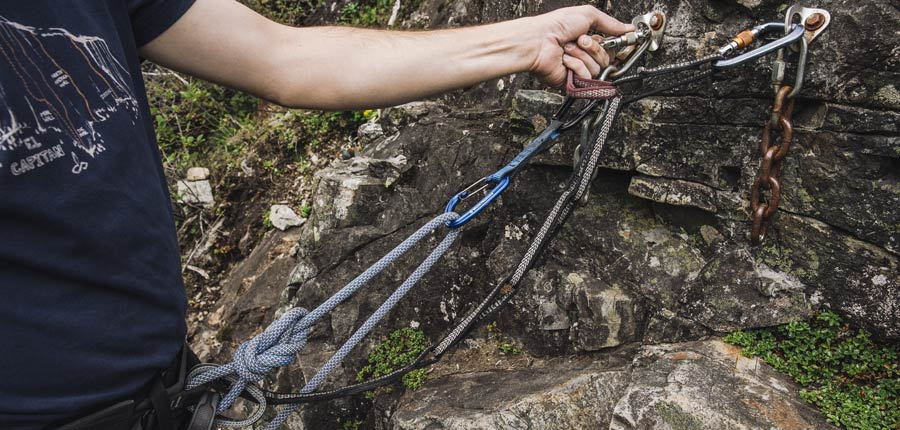

Learn skills before you start challenging yourself
How to Set and Clean a Top-Rope Anchor
When you first start top-rope climbing, you always have a more experienced climber set things up for you. Eventually, though, there comes a time when you want to set up your own top-rope anchor.
Access to the top of routes will vary, as will the available anchor points. Assessing and mitigating risk during anchor setup, even if you have a trail to the top, is vital.
In this article, we explain how to set up one type of versatile top-rope anchor: the quad. We'll also cover cleaning (removing) the quad anchor after everyone is done climbing.
A few things to keep in mind:
We're starting with a common scenario: a sport-climbing area with chains and rappel rings hanging from two bolts at the top of the route.
The best way to learn all these skills is to find an experienced climber to teach you, or to sign up for classes taught by a certified climbing instructor.
In addition to all your essential climbing gear, you need the following:
Personal Anchor System (PAS) girth hitched to both tie-in points on your harness (if you use an alternative type of anchor tether to a PAS, some steps here will change slightly)
25 feet of 7mm (or thicker) cordelette tied into a loop with a double fisherman’s bend
4 locking carabiners
Step 2: Tethering at the Top of the Route

With your anchor gear attached to your rack, set up and lead climb the route that leads to the pair of bolts where you plan to build your top-rope anchor.
Inspect everything there to be sure nothing is loose, worn or rusted. When in doubt, choose another route and anchor location. When clipping to permanent anchor points, your first choice is a bolt hanger, next is a chain link and last is a rappel ring.
Clip a quickdraw to an acceptable point below the bolt, and clip the rope into that draw.
Tell your belayer to take in the slack (the belay will back up your PAS).
Use a locking carabiner to clip a loop of the PAS to the same clip-in point as the draw.
Clip another PAS loop to an acceptable point below the other bolt.
IMPORTANT: A PAS is designed to hold you fast, and might fail if you rely on it to catch a fall of any distance. So you must choose PAS clip-in loops that take all of the slack out of the PAS.
Step 3: Setting Up the Quad
Take your cordellete and double it up so you have four equal-length strands.
Clip a locking carabiner into both strands of the loop end nearest to the double fisherman’s bend.
Clip that same carabiner into one of the bolts.
Hold the opposite end of your cordelette loop up to the other bolt.
Grasp the low point in the cordelette loop with your fist.
Tie an overhand knot on either side of your fist (about 8” apart)
Clip a locking carabiner into both strands of the free end of your cordelette loop.
Clip that same carabiner into the remaining bolt.
Create the power point of your anchor (where the top rope will clip in) by clipping two opposed locking carabiners into three of the strands that run between the knots you tied earlier—leave the fourth strand free. This setup limits (catches) the carabiners in the event that one side of the anchor fails.
SERENE-A Principles
This mnemonic trick helps you analyze the quality of your anchor. A properly set-up quad anchor conforms to these essential principles.
Solid: Each component of the anchor must be completely solid.
Equalized: Rig the anchor so that the load is distributed as equally as possible between the individual anchor points.
Redundant: You must always use redundant components when building an anchor so that if one component fails, the anchor will not automatically fail. At a minimum, use two solid anchor points. Three or more are recommended. Ensure that all parts of your anchor have built-in redundancy, including carabiners and slings.
Efficient: Make efficient use of time and gear when you’re building an anchor, and don’t create something that is overly complicated.
NO Extension: Construct your anchors so that if one anchor point fails, it won’t cause the anchor to suddenly extend, which would shock load the remaining anchor points and generate high impact forces.
Angles: Consider the angles created by the sling or slings in your anchor system. Larger angles put more force on each anchor point, so keep the angles to 60 degrees or less.
Step 4: Lowering After Anchor Setup
Lowering after completing your anchor follows the same procedures as you do when top-rope climbing, with some added steps:
Call to your belayer for “slack” and clip the climbing rope into both carabiners of your anchor’s power point.
Next, remove and rack your quickdraw.
Double-check that every single carabiner is locked.
Pull yourself up slightly into the anchor and call for “tension” until all your weight is on the rope and not your PAS.
Unclip your PAS from the bolts and rack it.
Weight the rope again.
Call to your belayer to “lower” you and then follow standard lowering procedures.
When you and your crew are done with the climbing session, prepare for a final climb to clean the anchor.
Just as you did prior to setting up the anchor, attach the PAS by tying a girth hitch through both tie-in points on your harness.
Set up and do a final top-rope climb to the top of the route.
Step 2: Tethering at the Top of the Route
These steps will be the same as those you followed prior to setting up the anchor.
Clip a quickdraw to one bolt, or another acceptable point, and clip the rope into that draw.
Tell your belayer to take in the slack (the belay will back up your PAS).
Use a locking carabiner to clip a loop of the PAS to the same bolt as the draw.
Clip another PAS loop to the other bolt, making sure that you select a loop that will keep slack out of the PAS as you work.
Step 3: Breaking Down the Anchor
This process is fairly straightforward. Simply unclip the anchor from the two bolts and rack things neatly, trying to keep bulky items near the back of the harness so they don’t get in the way when you rappel down.
Step 4: Rappelling
Never use a bolt hanger, chain link or rappel ring to lower yourself. That causes undue wear on components that aren’t designed to endure rope friction. If you feel you have to lower rather than rappel, “donate” a locking carabiner to the crag.
You should already be proficient at setting up and rappelling. The following steps prepare you to transition to that rappel:
Ask for slack and pull up about 20 feet of rope
Tie off the slack with a clove hitch or overhand on a bight and clip it into your belay loop. This prevents a mishandled rope from plummeting to the ground, stranding you.
Untie the figure 8 that attaches the rope to your harness and thread the rope through both rappel rings.
Close the system by tying a stopper knot in the end of the rope; this, combined with the stopper knot you should already have tied on the ground end of the rope, ensures you can’t rappel off the rope ends.
Feed the rope until the middle mark on the rope is at the top point of your rappel.
Have your belayer confirm that both rope ends are touching the ground.
Your PAS, which should still be firmly attached to both bolts, can now also be set up as an extension of your rappel device:
Clip a locking carabiner through two of the loops on your PAS, the cable of your rappel device and the belay loop on your harness.
Now you’re ready to set up (and back up) your rappel device, to double-check everything, and then to rappel back down to the ground.
Remember: Safety is your responsibility. No article or video can replace proper instruction and experience—this article is intended solely as supplemental information. Be sure you practice proper techniques and safety requirements before you climb.